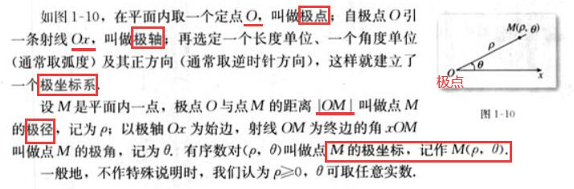

第一讲 坐标系
注: 如非特殊说明, 以下图片都来自人教版高三数学选修4-4电子课本_课本站
1.1 平面直角坐标系
待整理...
1.2 极坐标系(p8)

正如所有的二维坐标系，极坐标系也有两个坐标轴：
r（半径坐标）和θ（角坐标、极角或方位角，有时也表示为φ或t）。
r坐标表示与极点的距离，θ坐标表示按逆时针方向坐标距离0°射线（有时也称作极轴）的角度，极轴就是在平面直角坐标系中的x轴正方向。
比如，极坐标中的（3,60°）表示了一个距离极点3个单位长度、和极轴夹角为60°的点。
（−3,240°） 和（3,60°）表示了同一点，因为该点的半径为在夹角射线反向延长线上距离极点3个单位长度的地方（240° − 180° = 60°）。
1.3 简单曲线的极坐标方程
1.4 柱坐标系与球坐标系简介